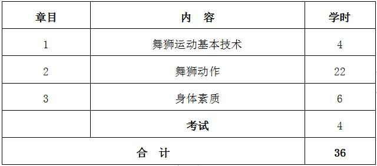

课程管理
|
课程名称 |
公共体育—龙狮运动（II） |
课程代码 |
TX031117 |
|
课程类型 |
√通识课 □学科（专业）基础课 □专业发展课 |
课程性质 |
√必修课 □选修课 |
|
开课单位 |
体育学院 |
适用专业 |
非体育专业 |
|
总学时数 |
36 |
周学时数 |
2 |
|
课程学分 |
1 |
编 写 人 |
逯小龙 |
|
编写时间 |
2017.07.20 |
审 批 人 |
刘其龙 |
一、教学目的
本课程以舞龙运动为主要锻炼形式，兼顾全面的身体素质练习，以提高学生的健康水平， 掌握锻炼方法和技能，为终身体育打好基础。本课程教学目的为：
1.通过本选项课的学习，使学生掌握民族传统体育《龙狮运动》课程中舞龙运动基本技术与练习方法， 传承与弘扬民族传统体育文化。
2.培养团队精神，同心协力去完成龙、狮的形态、神态动作，体现出龙、狮生龙活虎的效果，并以多种动、静的变化形式来展现龙、 狮的刚烈威猛之势和气势磅礴之态，突出观赏性。
3.使学生了解龙狮运动的基本知识，培养学生对龙狮运动的兴趣和爱好， 激发爱国主义精神和民族自豪感，弘扬民族精神。
4.全面发展和提高各项身体素质，改善身体机能，为今后运动能力和生活质量的提高打下基础。
二、重点与难点
（一）重点：狮子的步形步法、手形手法。
（二）难点：狮子的基本神态表现动作。
三、基本内容与要求
第1章 舞狮运动基本技术
1.1 基本功
1.2 基本手法
1.3 基本步型和步法
第2章 舞狮动作
（一）A级难度动作：（1）走跑直线；（2）走跑曲线；（3）跑顺逆圆场；（4）跑8字；（5）合拍；（6）侧滚；（7）三拜； （8）平地上肩；（9）平地上腿；（10）连环飞跃。
（二）B级难度动作：（1）双狮互滚背；（2）互跃狮头、狮尾；（3）互戏狮尾；（4）连环飞跃过障碍；（5）平地侧头飞滚； （6）平地坐头。
（三）C级难度动作：（1）双狮坐肩交搭前爪转体三周。
（四）组合动作
第3章 身体素质——中长跑
3.1 起跑和起跑后的加速
3.2 途中跑、终点跑
3.3 中长跑的呼吸
3.4 全程跑：1000米（男生）、800米（女生）
（一）教学目的：通过教学使学生掌握起跑和起跑后的加速、途中跑、终点跑等中长跑的基本技术，学会正确的呼吸方式，发展耐力素质，进一步增强心肺功能。
（二）重点与难点：途中跑技术；中长跑的呼吸。
（三）基本内容：起跑和起跑后的加速、途中跑、终点跑等基本技术；全程跑。
四、授课内容学时分配
五、成绩考核：
（一）考核方式：技术考试
考核成绩（100%）=技术成绩×70%＋平时成绩×30%。其中，技术成绩=舞狮组合动作×70+舞狮造型×30%；平时成绩=出勤率×50%＋课堂学习态度×50%。 身体素质为每学期的必考项目，考试内容为男子1000米、女子800米。
（二）考试内容：舞狮规定套路、身体素质（男子1000米、女子800米）。
（三）评分标准：
1.舞狮规定套路的评分标准（满分为100分）
（1）动作规格，分值为70分。
姿势正确，方法合理，配合协调，技术熟练，出色完成全部动作给予满分；与动作规格有差距，轻微错误扣0.5分； 明显错误扣1分，严重错误扣2分；一个动作出现多种错误，最多扣3分。
（2）布局、结构、精神面貌，分值为15分。
布局合理、结构严谨、动作顺序、方位、路线正确，有很好的表现力给予满分；改变规定套路动作顺序，运动方向线路， 每出现一次扣1分；完成套路节奏松散，运动员精神面貌不足，缺乏表现力，根据程度扣1至5分。
（3）音乐伴奏，分值为10分。
音乐伴奏的节奏与舞龙动作、构图紧密配合，协调一致，乐曲完整，很好地烘托舞龙气氛给予满分；与以上标准有差距， 根据情节扣1至5分。
2.平时成绩
（（1）课堂表现情况占平时分50%。课堂学习态度是否积极、认真、端正，对体育理论知识掌握运用熟练度； 技术、技能表现进步幅度。
（2）出勤情况占平时分50%。每缺勤一次扣 5 分，每迟到一次扣2分（不足部分从考核项目得分中扣除）， 学期缺勤 5 次及以上者不能参加考试。
3.身体素质（男子1000米/女子800米）：评分标准见表1。
六、教材与参考书目
（一）使用教材：
[1] 雷军蓉，《龙狮运动训练》，北京，北京体育大学出版社，2005年。
（二）参考书目：
[1] 国际龙狮总会审定，《国际舞龙舞狮竞赛规则、裁判法》，中英版， 2002年。
[2] 雷军蓉，《舞龙运动》，北京体育大学出版社，2004年。
表1 身体素质考核评分标准

注：数据来源于国家学生体质健康标准（2014年修订）。